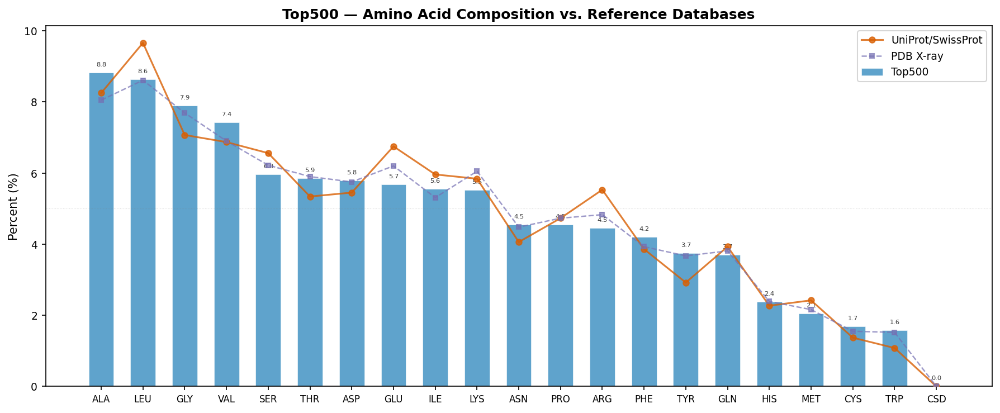
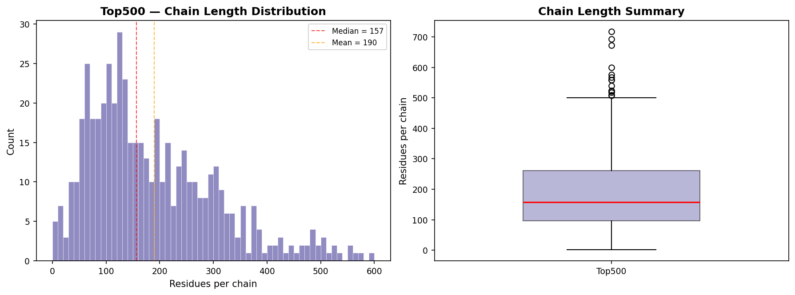
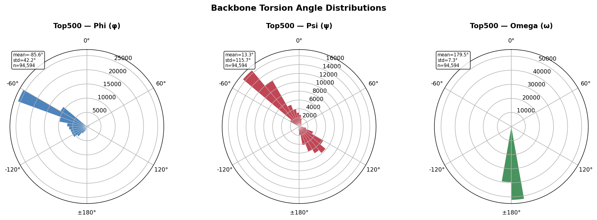
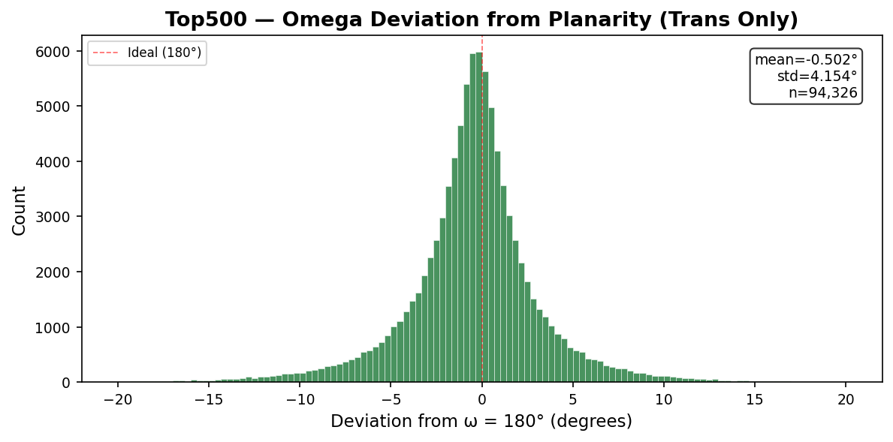
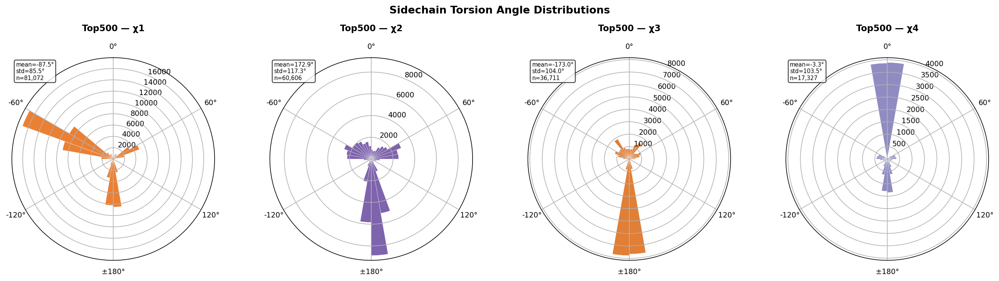
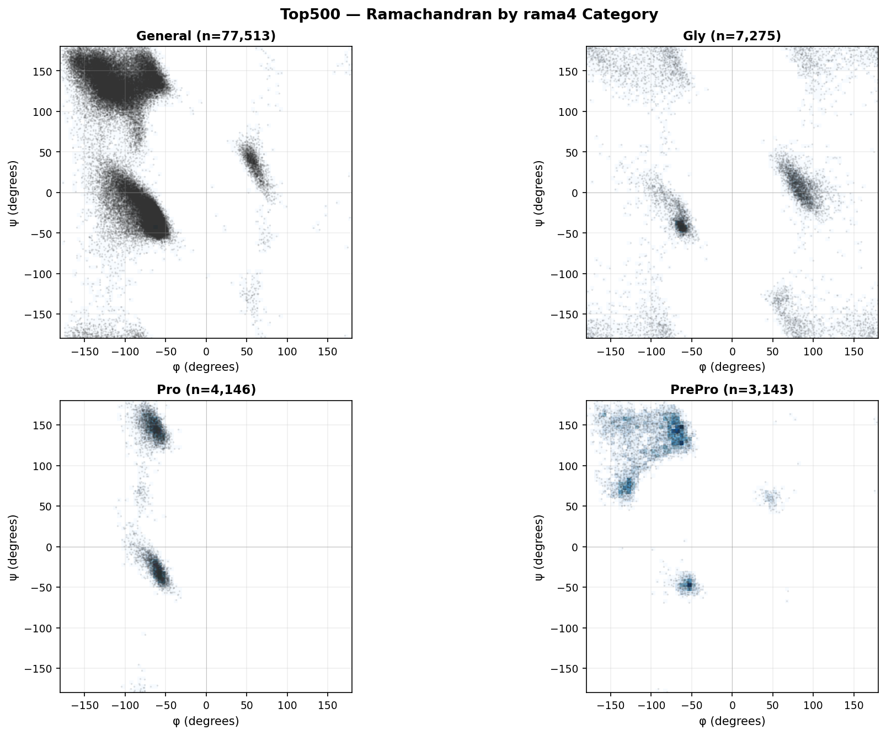
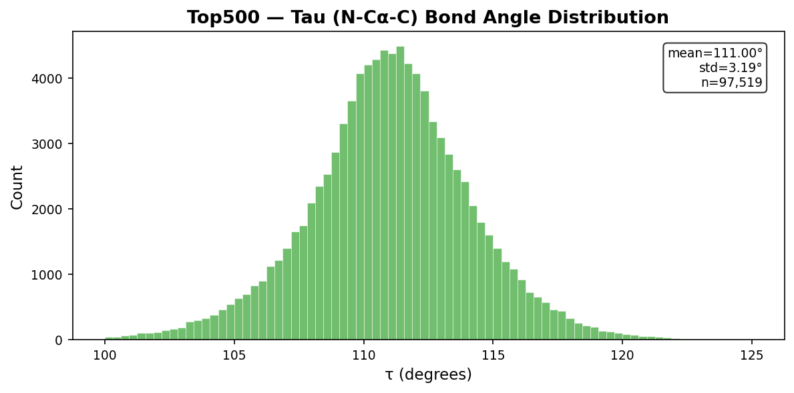

Residues: 97,519 | Chains: 514 | Structures: 492 | Source: top500_measures.jsonl | Generated by: pydangle-biopython v0.5.1
This document provides the following analyses:
| Dataset | Top500 |
| Total residues | 97,519 |
| Unique structures | 492 |
| Unique chains | 514 |
Measurements available: phi: 94,594, psi: 94,594, omega: 94,594, tau: 97,519, chi1: 81,072, chi2: 60,606, chi3: 36,711, chi4: 17,327. Not all residues have all measurements — terminal residues lack phi/psi/omega, and glycine and alanine lack sidechain chi angles.
Ramachandran category distribution:
General 65,472 (67.14%)
IleVal 12,041 (12.35%)
Gly 7,275 ( 7.46%)
TransPro 3,927 ( 4.03%)
PrePro 3,143 ( 3.22%)
CisPro 219 ( 0.22%)
Torsion angles (circular statistics):
Angle N Circ Mean Circ Std
-------- ---------- ------------ ------------
phi 94,594 -85.589 42.247
psi 94,594 13.349 115.731
omega 94,594 179.505 7.300
chi1 81,072 -87.483 85.503
chi2 60,606 172.912 117.293
chi3 36,711 -172.964 103.976
chi4 17,327 -3.292 103.523
Bond angles (linear statistics):
tau 97,519 111.000 3.190The figure and table below compare the Top500 amino acid frequencies against two reference databases:
The two reference distributions are highly similar (most amino acids differ by <0.5%), indicating that the PDB’s well-known crystallization bias — overrepresentation of soluble, globular, well-expressing proteins from model organisms — has only a modest effect on overall amino acid composition.
The Top500 dataset (97,519 residues from 492 structures) shows additional deviations from both references due to quality filtering, homology reduction, and sample size effects.

Residue Count Dataset% UniProt% PDB% Δ UniProt
-------- -------- --------- --------- --------- ----------
ALA 8,600 8.82% 8.25% 8.05% +0.57%
LEU 8,421 8.64% 9.66% 8.61% -1.02%
GLY 7,704 7.90% 7.07% 7.69% +0.83%
VAL 7,243 7.43% 6.87% 6.90% +0.56%
SER 5,811 5.96% 6.56% 6.22% -0.60%
THR 5,711 5.86% 5.34% 5.90% +0.52%
ASP 5,643 5.79% 5.45% 5.75% +0.34%
GLU 5,533 5.67% 6.75% 6.20% -1.08%
ILE 5,415 5.55% 5.96% 5.31% -0.41%
LYS 5,380 5.52% 5.84% 6.05% -0.32%
ASN 4,431 4.54% 4.06% 4.48% +0.48%
PRO 4,429 4.54% 4.73% 4.73% -0.19%
ARG 4,349 4.46% 5.53% 4.83% -1.07%
PHE 4,096 4.20% 3.86% 3.93% +0.34%
TYR 3,654 3.75% 2.92% 3.67% +0.83%
GLN 3,601 3.69% 3.93% 3.81% -0.24%
HIS 2,316 2.37% 2.27% 2.39% +0.10%
MET 2,004 2.05% 2.42% 2.16% -0.37%
CYS 1,645 1.69% 1.37% 1.55% +0.32%
TRP 1,532 1.57% 1.08% 1.52% +0.49%
CSD 1 0.00% 0.00% 0.00% +0.00%
Chain length statistics (514 chains):
Min: 1
Q1: 96
Median: 157
Mean: 189.7
Q3: 260
Max: 718
Std: 126.4Torsion angles (φ, ψ, ω, χ) are periodic variables defined on the interval [−180°, +180°]. Standard (linear) arithmetic means and standard deviations give misleading results when values cluster near the ±180° boundary — for example, a linear mean of trans peptide bond ω values near +179° and −179° yields ~0° rather than the correct ~180°. All torsion angle summary statistics in this report use circular statistics: the circular mean is computed as atan2(⟨sin θ⟩, ⟨cos θ⟩), and the circular standard deviation as √(−2 ln R̄) where R̄ is the mean resultant length.




Category counts (rama4):
General 77,513 (79.49%)
Gly 7,275 ( 7.46%)
Pro 4,146 ( 4.25%)
PrePro 3,143 ( 3.22%)Bond angles are non-periodic and are analyzed with standard linear statistics (arithmetic mean, standard deviation).

Lovell, S. C., Davis, I. W., Arendall, W. B. III, de Bakker, P. I. W., Word, J. M., Prisant, M. G., Richardson, J. S., & Richardson, D. C. (2003). Structure validation by Cα geometry: φ, ψ and Cβ deviation. Proteins, 50(3), 437–450. doi:10.1002/prot.10286
Lovell, S. C., Word, J. M., Richardson, J. S., & Richardson, D. C. (2000). The penultimate rotamer library. Proteins, 40(3), 389–408. doi:10.1002/1097-0134
Hintze, B. J., Lewis, S. M., Richardson, J. S., & Richardson, D. C. (2016). Molprobity’s ultimate rotamer-library distributions. Proteins, 84(9), 1177–1189. doi:10.1002/prot.25039
Williams, C. J., Headd, J. J., Moriarty, N. W., Prisant, M. G., Videau, L. L., Deis, L. N., Verma, V., Keedy, D. A., Hintze, B. J., Chen, V. B., Jain, S., Lewis, S. M., Arendall, W. B. III, Snoeyink, J., Adams, P. D., Lovell, S. C., Richardson, J. S., & Richardson, D. C. (2018). MolProbity: More and better reference data for improved all-atom structure validation. Protein Science, 27(1), 293–315. doi:10.1002/pro.3330
Word, J. M., Lovell, S. C., Richardson, J. S., & Richardson, D. C. (1999). Asparagine and glutamine: using hydrogen atom contacts in the choice of side-chain amide orientation. Journal of Molecular Biology, 285(4), 1735–1747.
Davis, I. W., Leaver-Fay, A., Chen, V. B., Block, J. N., Kapral, G. J., Wang, X., Murray, L. W., Arendall, W. B. III, Snoeyink, J., Richardson, J. S., & Richardson, D. C. (2007). MolProbity: all-atom contacts and structure validation for proteins and nucleic acids. Nucleic Acids Research, 35(Web Server), W375–W383. doi:10.1093/nar/gkm216
Edison, A. S. (2001). Linus Pauling and the planar peptide bond. Nature Structural Biology, 8(3), 201–202. doi:10.1038/84921
Generated by pydangle-biopython v0.5.1 and the richardson-dataset-curation analysis pipeline.